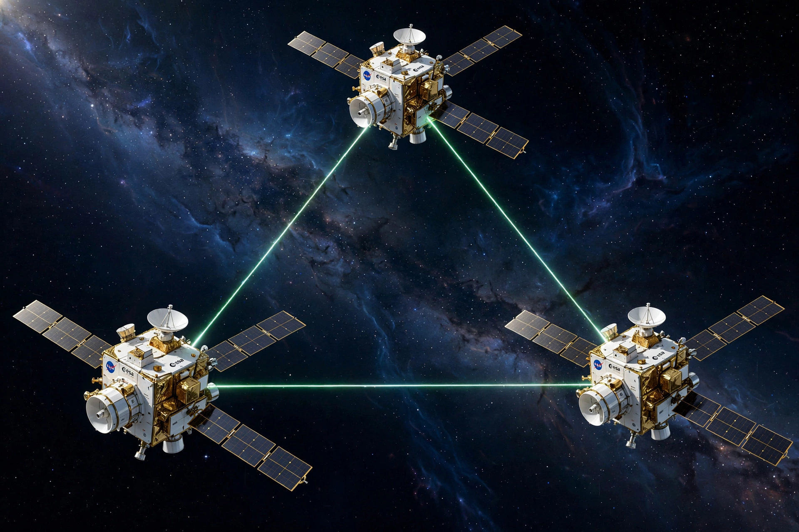

The Laser Interferometer Space Antenna (LISA) is a planned space mission of the European Space Agency to detect gravitational waves using laser interferometry between three spacecraft flying in a triangular formation 2.5 million kilometres on a side, trailing the Earth around the Sun.
LISA will be sensitive to low-frequency gravitational waves (0.1 mHz to 1 Hz) from merging supermassive black holes, extreme mass-ratio inspirals and thousands of compact galactic binaries — sources inaccessible to ground detectors such as LIGO.
The LISA Pathfinder mission (2015–2017) demonstrated the required drag-free test-mass technology beyond expectations. ESA formally adopted LISA in January 2024, with construction and a launch on Ariane 6 planned for the mid-2030s. See Gravitational wave.